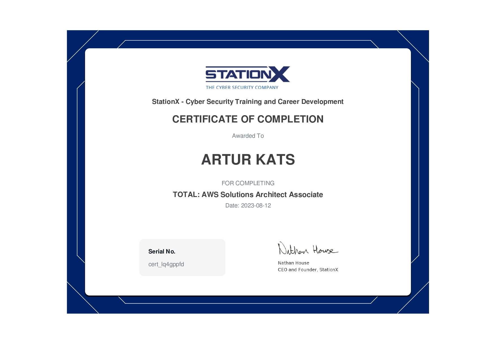
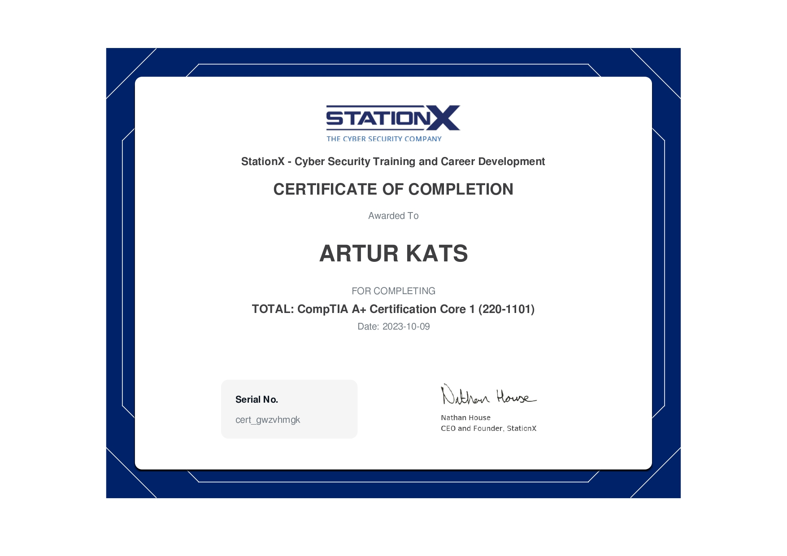
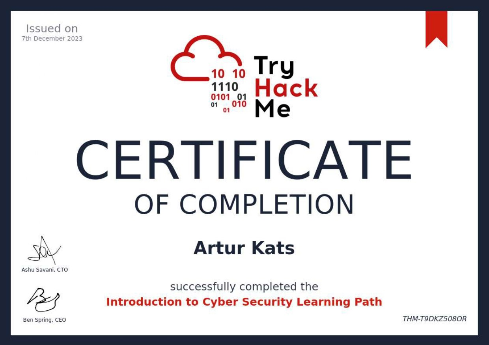
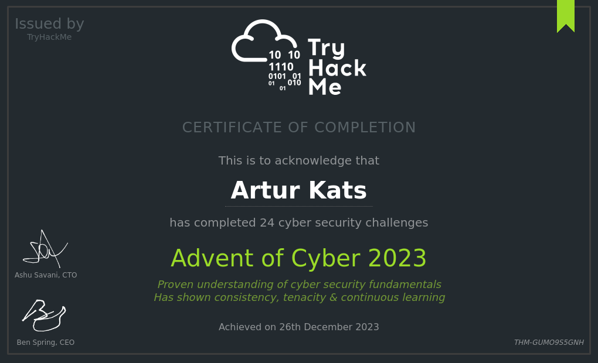
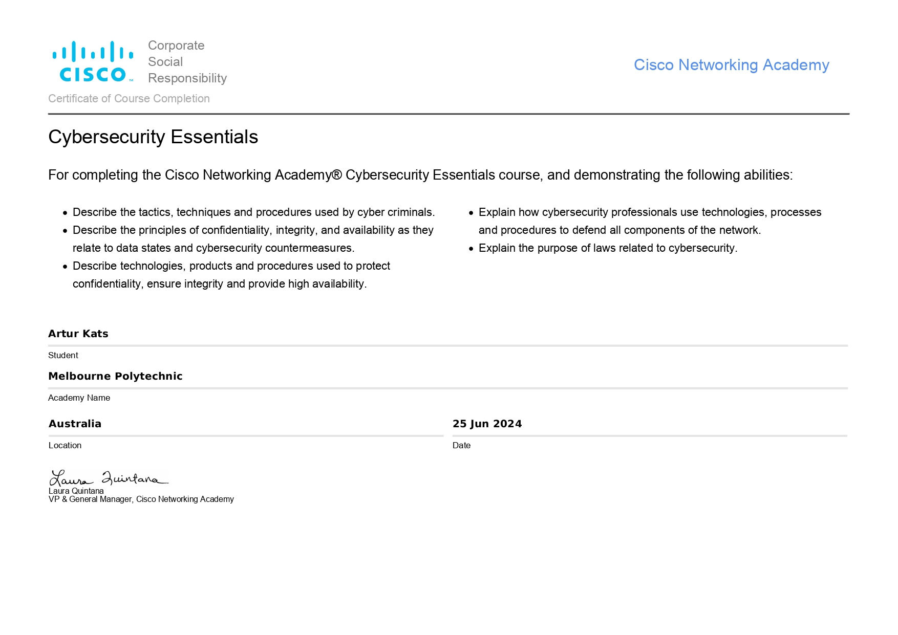
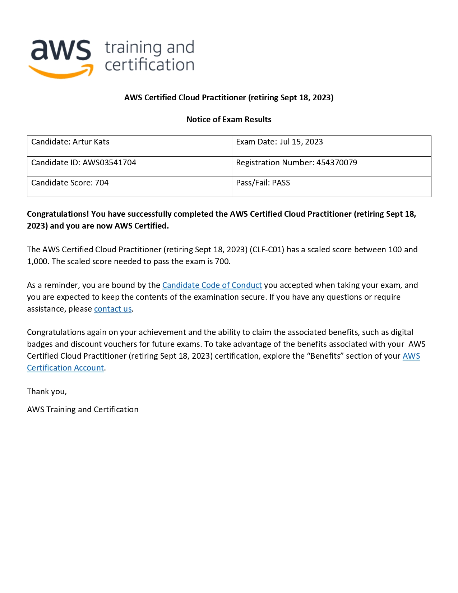
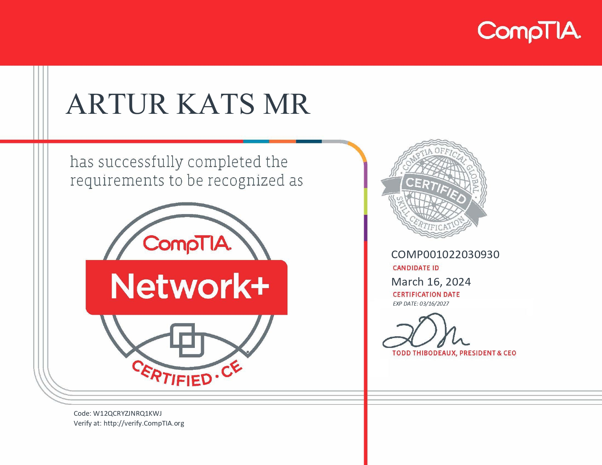

Artur Kats
Profile: IT Tech
Email: arturkats@live.com
Phone: (61) 414 391 616
Skills
- Computer Software & Hardware Troubleshooting
- Network Troubleshooting
- Security Best Practices
- Operating Systems
- AI & Natural Language Processing
- Azure & AWS Cloud Computing
- Wireshark
- Governance & Compliance
- Customer Support
- WHS & Communication
About Me
As a dedicated IT professional with a strong foundation in various aspects of technology, I hold multiple certifications including CompTIA ITF+, A+, Network+, AWS Certified Cloud Practitioner, and Azure AI-900. My expertise spans across computer software and hardware troubleshooting, network configuration and troubleshooting, security best practices, and operating systems. I am passionate about leveraging my skills to solve complex technical issues and provide exceptional customer support.
In addition to my certifications, I possess hands-on experience with AI and natural language processing, cloud computing on both Azure and AWS platforms, and network analysis using Wireshark. My commitment to governance and compliance ensures that I adhere to industry standards and best practices. I am also well-versed in workplace health and safety (WHS) and effective communication, which are crucial for maintaining a safe and productive work environment.
Currently, I am furthering my knowledge by pursuing a Certificate IV in Cyber Security. This education, combined with my certifications and skills, equips me with a comprehensive understanding of the IT landscape. I am eager to contribute to innovative projects and collaborate with teams to drive technological advancements. My goal is to continuously grow and adapt in the ever-evolving field of IT, ensuring that I remain at the forefront of industry developments.
SERVICES
Expert IT solutions in troubleshooting, networking, security, cloud computing, GRC, and customer support.
Computer Software & Hardware Troubleshooting
Efficiently diagnose and resolve software and hardware issues to ensure smooth operation of your systems. Utilise industry best practices to minimise downtime and enhance productivity.
Network Configuration & Troubleshooting
Design, implement, and troubleshoot network infrastructures to ensure optimal performance and security. Expertise in configuring routers, switches, and firewalls to meet your specific needs.
Security Best Practices
Focus on implementing essential security measures to protect data and systems from potential threats.
Cloud Computing (Azure & AWS)
Leverage the power of cloud computing to streamline your operations and reduce costs. Provide comprehensive cloud solutions, including deployment, management, and optimisation of Azure and AWS services.
Governance, Risk and Compliance
Ensure your organisation adheres to industry standards and regulations with comprehensive GRC services. Identify and mitigate risks while maintaining compliance with governance frameworks.
Customer Support and Communication
Deliver exceptional customer support to address technical issues and inquiries promptly. Utilise effective communication skills to ensure a positive customer experience and build lasting relationships.
EDUCATION
Graduate in Law, Economics and Interpreting.
- Apr. 2024 - Apr. 2026 - Certificate IV in Cyber Security, Melbourne Polytechnic.
- Jun. 2021 - Dec. 2021 - Diploma in Interpreting (Language Other Than English: Spanish), Albright Institute of Business and Language.
- Jun. 2020 - Mar. 2021 - Graduate Diploma in Legal Practice (Family Law, Wills and Estates), Leo Cussen Institute.
- Feb. 2016 - Mar. 2020 - Bachelor of Law (Graduate entry) (Cyber Law), La Trobe University.
- Sep. 2011 - Jun. 2015 - Bachelor of Economics (International Business Negotiation), Beijing Union University
LANGUAGES
Excellent communication in English, Spanish and Russian. Good understanding of Chinese Mandarin.
- English
- Spanish
- Russian
- Chinese Mandarin
COURSEWORK PORTFOLIO
Courses in IT Tech, Network, AI, Cloud Computing and Cyber Security at Cisco Networking Academy, Microsoft Learning, TryHackMe and StationX.
- AWS Certified Cloud Practitioner - Essentials Course AWS / 14 July 2023
- AWS Solutions Achitect Associate certificate of completion AWS / 12 Aug. 2023 
- CompTIA A+ Core 1 (220-1101) certificate of completion CompTIA / 9 Oct. 2023 
- CompTIA A+ Core 1 (220-1102) certificate of completion CompTIA / 7 Nov. 2023
- CompTIA Network+ - certificate of completion CompTIA / 18 Nov. 2023
- TryHackMe - Introduction to Cyber Security - certificate of completion TryHackMe / 7 Dec. 2023 
- TryHackMe - Pre Security - certificate of completion TryHackMe / 25 Dec. 2023
- TryHackMe - Advent of Cyber 2023 TryHackMe / 26 Dec. 2023 
- Cisco Networking Academy - Cybersecurity Essentials Cisco / 25 Jun. 2024 
- Microsoft Azure AI900 Bootcamp - certificate of completion Microsoft / 11 Jul. 2024

CERTIFICATIONS
Recognised certifications from AWS, CompTIA and Microsoft.
- AWS Certified Cloud Practitioner certification, AWS / 15 July 2023 
- CompTIA Network+ certification, CompTIA / 16 Mar. 2024 
- Microsoft Azure AI900 Fundamentals certification, Microsoft / 20 Jul. 2024

PROJECTS
Some of my Workstation and Desktop PC projects, which were assembled and sold, between 2019 and 2024.
See more project photos in our gallery.

TESTIMONIALS
Marta S: Thank you so much, Arthur, I really love my new computer! Raf: Everything's working just fine. Thanks plenty. John M: Thanks for your help. Sandeep S: Thanks Artur. We will be in touch if anything comes up. Mark P: Great service thanks, I'll be in touch.BLOG
IT Tech, Networking, AI and Cyber Security posts.
Essential Tips for Effective PC Troubleshooting
 Effective PC troubleshooting involves identifying the specific issue, updating software, scanning for malware, and inspecting hardware for faults.
Effective PC troubleshooting involves identifying the specific issue, updating software, scanning for malware, and inspecting hardware for faults.
Essential Tips for Network Troubleshooting
 Effective network troubleshooting involves identifying the issue, checking physical connections, verifying network settings, updating firmware, and seeking professional help for complex problems to maintain a stable and efficient network.
Effective network troubleshooting involves identifying the issue, checking physical connections, verifying network settings, updating firmware, and seeking professional help for complex problems to maintain a stable and efficient network.
The Role of AI in Enhancing Cybersecurity
Contact
Get in Touch
I’m always excited to connect with like-minded professionals and explore new opportunities. Whether you have a project in mind, need assistance with IT solutions, or simply want to network, feel free to reach out. Let’s collaborate and create something amazing together!